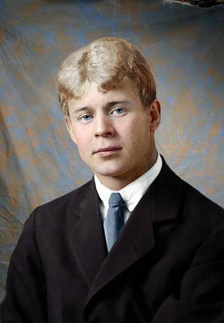

Сергей Есенин

В своём творчестве Сергей Есенин причастен к самым жгучим, самым животрепещущим проблемам, которые встали перед Родиной. Только поэт, которого до глубины души волновала красота родных «рязанских раздолий», судьба «Руси крестьянской» в революции, будущее всего «шара земного», мог создать «Инонию» и «Сорокоуст», «Пугачева» и «Страну негодяев», «Москву кабацкую» и «Персидские мотивы», «Русь советскую» и «Письмо к женщине», «Капитана земли» и «Балладу о двадцати шести», «Черного человека» и «Анну Снегину». А лирико-философские стихи Есенина! Такие, как «Не жалею, не зову, не плачу…», «Отговорила роща золотая…», «Не бродить, не мять в кустах багряных…», «Разбуди меня завтра рано…», «Закружилась листва золотая…», «Мы теперь уходим понемногу…», «Спит ковыль. Равнина дорогая…», «Цветы мне говорят – прощай…» и другие. Столько в них сокровенного, есенинского, лично пережитого, и одновременно столько общечеловеческой доброты и сердечного тепла, которого так явно сегодня не хватает на нашей планете.
Время не властно над поэзией Есенина. Давно ушли в прошлое многие события, волновавшие поэта, изменилась реальность, питавшая его стихи. Но каждое новое поколение открывает в Есенине нечто близкое и дорогое. Среди читателей Центра чтения, как молодых, так и постарше возрастом, поэт Сергей Есенин пользуется большой популярностью, стихи его всегда читают с большим интересом.